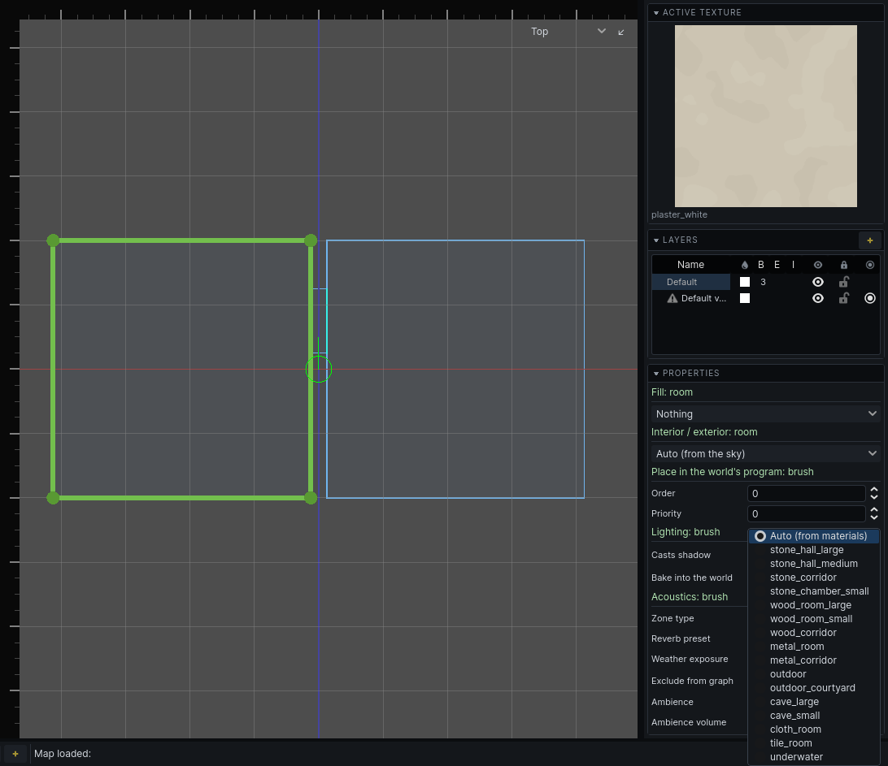

Rooms
An acoustic zone is a room as sound hears it. Each region of carved air is a zone. Air brushes that overlap merge into one zone; air brushes that abut stay separate zones joined by their opening. The rule from the carved world holds for sound too: overlap to extend a space, abut to divide one.
A pillared hall is one zone. An L-shaped room built from two overlapping air brushes is one zone. Two rooms either side of a doorway are two.
The Audio section
Select a structural air brush. The inspector shows an Audio section. It does not appear for solid, detail, or several brushes of mixed tiers.
| Property | What it does | Default |
|---|---|---|
| Zone type | Interior, Exterior or Semi-exterior. Auto makes a room Exterior when it is open to the sky itself, otherwise Interior. See Outdoors. | Auto (open to the sky) |
| Reverb preset | How the room rings. Auto picks one from the room's size and textures. | Auto (from materials) |
| Weather exposure | For a Semi-exterior room only: 0 fully sheltered, 1 fully open. | 0 |
| Exclude from graph | Leaves the room out of the audio graph. For spaces the player never enters. | off |
| Ambience | The ambient bed heard while standing in the room, by your game's id for it. A dropdown when your game provides the list. | empty (silent) |
| Ambience volume | Ambience level in this room, in dB, from -40 to 12. | 0 |
Every air brush of one room shares these values. A value left at its default is not stored, so an improved Auto reaches old maps too.
Note: Changing any of these dates the audio graph. Rebuild it: see The audio graph.
Reverb presets
Auto reads the textures of the room's walls and its volume. It is usually right. Override it where a room should sound unlike what it is built of.
| Preset | Use for |
|---|---|
stone_hall_large, stone_hall_medium |
halls, churches, large stone rooms |
stone_corridor |
stone passages |
stone_chamber_small |
cells, small stone rooms |
wood_room_large, wood_room_small, wood_corridor |
timber interiors |
metal_room, metal_corridor |
machinery, ducts |
outdoor |
open ground |
outdoor_courtyard |
enclosed yards |
cave_large, cave_small |
natural rock |
cloth_room |
carpets, tapestries, a bedroom |
tile_room |
baths, kitchens |
underwater |
used by water rooms automatically |
The presets are deliberately tight. Nothing rings like a cathedral.
Ambience
A room's ambience plays while the listener stands in it: a hum, distant traffic, dripping. It is flat stereo, not placed in the world, and guards do not hear it.
- Walking into a room with a different ambience crossfades over two seconds.
- Rooms naming the same ambience share one bed. Walking between them glides to the new room's volume without restarting.
- A room with no ambience fades to silence.
Water
A room most of whose volume is a water fill is a water zone. It uses the underwater reverb. Its surface blocks most sound in either direction, and what gets through is dull.
- A pool that abuts its room is its own zone. The opening between them is the surface.
- A pool that overlaps its room shares one zone with it. The surface still costs what it costs; it just has no opening to show in the tool.
A listener under the surface hears everything muffled.
Placed sounds
Place a positional sound with the env_sound entity from the entity browser (see Entities). It plays from its position and travels through the rooms like any other sound.
| Property | What it does | Default |
|---|---|---|
sound_file |
Path of the sound, relative to your game's sounds folder. | empty |
volume |
Level in dB. | 0 |
max_distance |
How far the sound carries. Past it, nothing - measured along the route it took, so a reach is a reach through the world rather than through walls. 0 is no limit. The sphere drawn round the selected entity is this. | 2000 |
attenuation_scale |
Scales what the route's openings and corners cost this sound. 0 ignores them. | 1 |
autoplay |
Starts when the map loads or the simulation starts. | on |
loop |
Loops the sound. | on |
use_audio_propagation |
Off plays it where it stands, ignoring walls. | on |
For rain and wind, use env_sound_environment: see Outdoors.
